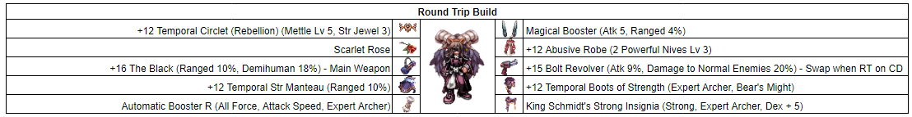
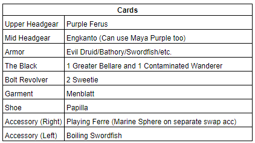
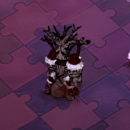
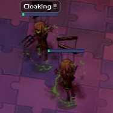
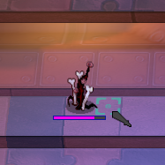
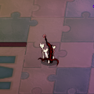
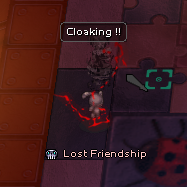

File list
Jump to navigation
Jump to search
This special page shows all uploaded files.
{kind=link}
{kind=link}
| Date | Name | Thumbnail | Size | User | Description | Versions |
|---|---|---|---|---|---|---|
| 02:26, 18 December 2021 | Ardor.gif (file) | 29 KB | Randomced859 | 1 | ||
| 02:24, 18 December 2021 | Serpens.gif (file) | 49 KB | Randomced859 | 1 | ||
| 02:19, 18 December 2021 | Diluvio.gif (file) | 39 KB | Randomced859 | 1 | ||
| 19:32, 16 December 2021 | Shadow Gear EQ.png (file) |  |
11 KB | I Know To Write | 1 | |
| 19:34, 15 December 2021 | Refine shadow gear npc.png (file) |  |
70 KB | I Know To Write | 1 | |
| 19:27, 9 December 2021 | PVP RT Fixed.png (file) |  | 42 KB | Kancell | updated hat | 2 |
| 19:11, 5 December 2021 | PVP Slug Cards.png (file) |  |
10 KB | Kancell | 1 | |
| 19:10, 5 December 2021 | PVP Slug Build.png (file) | 37 KB | Kancell | 1 | ||
| 19:06, 5 December 2021 | PVP RT Build.png (file) | 41 KB | Kancell | Reverted to version as of 18:55, 5 December 2021 (UTC) | 3 | |
| 18:56, 5 December 2021 | PVP RT Cards.png (file) |  | 11 KB | Kancell | 1 | |
| 01:40, 22 November 2021 | Racing Cap RG.gif (file) |  |
5.79 MB | G00suede | 1 | |
| 19:54, 17 November 2021 | Jup exp 21.png (file) |  |
130 KB | Tokeiburu | 1 | |
| 19:51, 17 November 2021 | Jup exp 20.png (file) |  |
137 KB | Tokeiburu | 1 | |
| 19:51, 17 November 2021 | Jup exp 19.png (file) |  |
134 KB | Tokeiburu | 1 | |
| 19:28, 17 November 2021 | Jup exp 18.png (file) |  |
135 KB | Tokeiburu | 1 | |
| 19:24, 17 November 2021 | Jup exp 14.png (file) |  |
130 KB | Tokeiburu | 1 | |
| 19:23, 17 November 2021 | Jup exp 17.png (file) | 132 KB | Tokeiburu | 1 | ||
| 19:19, 17 November 2021 | Jup exp 16.png (file) |  |
136 KB | Tokeiburu | 1 | |
| 19:15, 17 November 2021 | Jup exp 15.png (file) | 134 KB | Tokeiburu | 1 | ||
| 18:50, 17 November 2021 | Jup exp 13.png (file) |  |
128 KB | Tokeiburu | 1 | |
| 18:46, 17 November 2021 | Jup exp 12.png (file) | 141 KB | Tokeiburu | 1 | ||
| 18:46, 17 November 2021 | Jup exp 11.png (file) |  |
65 KB | Tokeiburu | 1 | |
| 18:26, 17 November 2021 | Jup exp 10.png (file) | 120 KB | Tokeiburu | 1 | ||
| 18:26, 17 November 2021 | Jup exp 09.png (file) | 122 KB | Tokeiburu | 1 | ||
| 18:13, 17 November 2021 | Jup exp 08.png (file) | 137 KB | Tokeiburu | 1 | ||
| 18:07, 17 November 2021 | Jup exp 07.png (file) |  |
101 KB | Tokeiburu | 1 | |
| 17:50, 17 November 2021 | Jup exp 06.png (file) | 109 KB | Tokeiburu | 1 | ||
| 17:38, 17 November 2021 | Jup exp 05.png (file) | 137 KB | Tokeiburu | 1 | ||
| 17:38, 17 November 2021 | Jup exp 04.png (file) |  |
71 KB | Tokeiburu | 1 | |
| 17:38, 17 November 2021 | Jup exp 03.png (file) |  |
110 KB | Tokeiburu | 1 | |
| 17:37, 17 November 2021 | Jup exp 02.png (file) |  |
115 KB | Tokeiburu | 1 | |
| 16:59, 17 November 2021 | Jup exp 01.png (file) |  |
130 KB | Tokeiburu | 1 | |
| 17:26, 13 November 2021 | Kimi.png (file) |  |
58 KB | I Know To Write | 1 | |
| 17:11, 13 November 2021 | Time3.png (file) |  |
69 KB | I Know To Write | 1 | |
| 17:07, 13 November 2021 | Time22.png (file) |  |
59 KB | I Know To Write | 1 | |
| 17:07, 13 November 2021 | Time21.png (file) |  |
64 KB | I Know To Write | 1 | |
| 17:00, 13 November 2021 | Time1.png (file) |  |
57 KB | I Know To Write | 1 | |
| 16:49, 13 November 2021 | Cookie.png (file) |  |
51 KB | I Know To Write | 1 | |
| 16:46, 13 November 2021 | Gibbet.png (file) |  | 52 KB | I Know To Write | 1 | |
| 16:45, 13 November 2021 | Bear.png (file) |  |
42 KB | I Know To Write | 1 | |
| 16:37, 13 November 2021 | Heartbet.png (file) |  | 103 KB | I Know To Write | 1 | |
| 16:26, 13 November 2021 | Remorse.png (file) |  |
43 KB | I Know To Write | 1 | |
| 16:26, 13 November 2021 | Distress.png (file) |  | 43 KB | I Know To Write | 1 | |
| 16:25, 13 November 2021 | Fear.png (file) |  | 44 KB | I Know To Write | 1 | |
| 16:19, 13 November 2021 | Anguish.png (file) |  |
49 KB | I Know To Write | 1 | |
| 16:18, 13 November 2021 | Kimi sorrow.png (file) |  |
59 KB | I Know To Write | 1 | |
| 19:16, 10 November 2021 | Endsuf.png (file) |  |
48 KB | I Know To Write | 1 | |
| 19:15, 10 November 2021 | Rfeel.png (file) |  |
49 KB | I Know To Write | 1 | |
| 19:13, 10 November 2021 | Fdream.png (file) |  |
50 KB | I Know To Write | 1 | |
| 19:03, 10 November 2021 | Lfriend.png (file) |  | 49 KB | I Know To Write | 1 |
{kind=link}
{kind=link}
{kind=link}
{kind=link}
{kind=link}
{kind=link}
{kind=link}
{kind=link}
{kind=link}
{kind=link}
{kind=link}
{kind=link}
{kind=link}
{kind=link}
{kind=link}
{kind=link}
{kind=link}
{kind=link}
{kind=link}